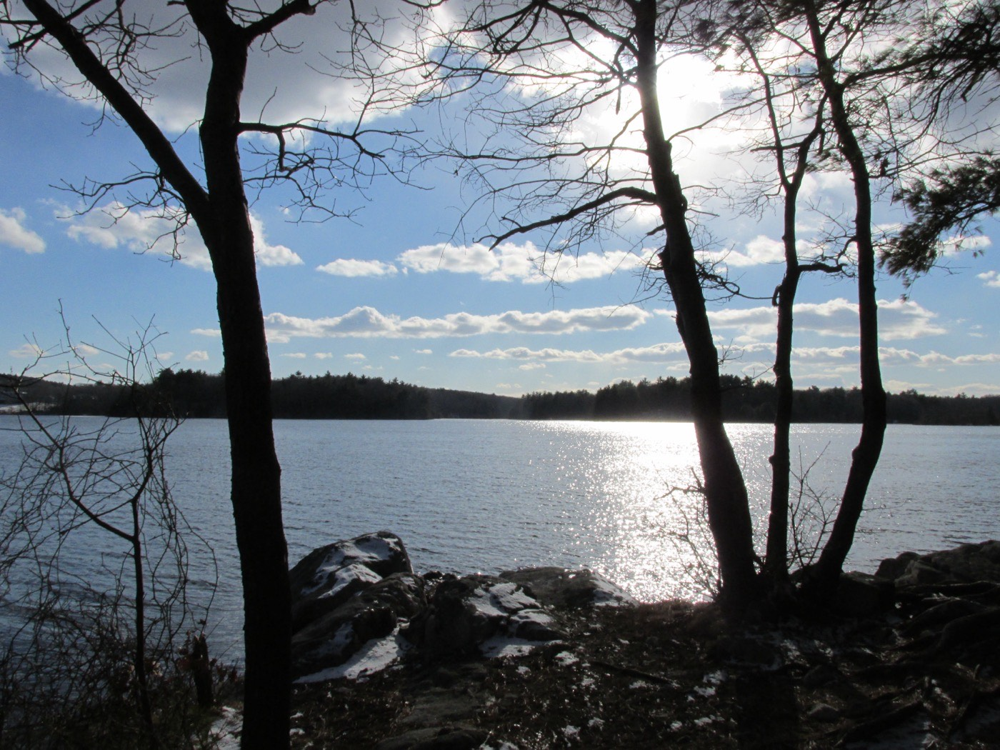
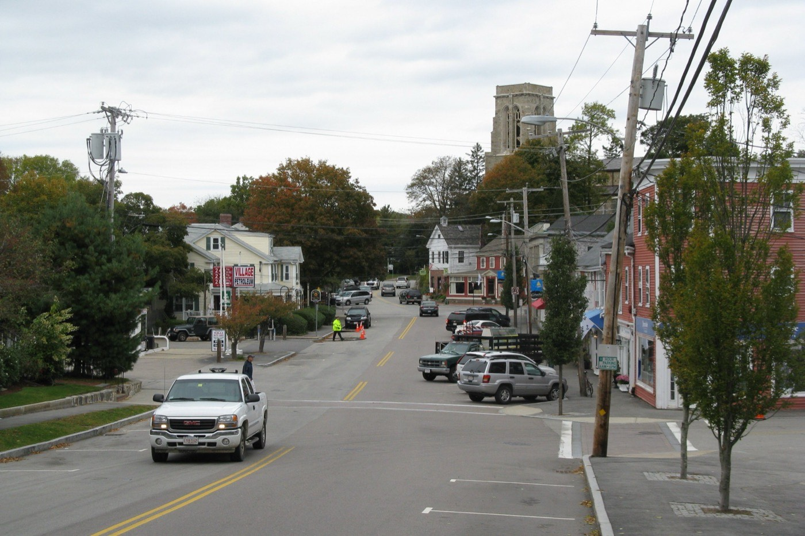

Independent community water quality initiative
We track MassDEP and EPA testing data for the Cohasset Water Department's own system — Lily Pond, the Aaron River Reservoir, and the Ellms Meadow well-field — and help Cohasset families understand what's really coming out of the tap, in plain language, sourced from public records.
Cohasset's own water system — separate from the Weir River system that serves the North Cohasset section of town — draws from two surface supplies, Lily Pond and the Aaron River Reservoir, plus the Ellms Meadow groundwater well-field. It's operated by the town's elected Board of Water Commissioners, not a private utility.
The town's 2023 Consumer Confidence Report shows the system currently testing within Massachusetts' PFAS6 standard: a quarterly average of 12.08 parts per trillion (ppt), against the state's 20 ppt limit. But a separate compilation of MassDEP data going back to 2018 shows this same system's PFAS6 level peaked at 25.8 ppt at some point in that window — above the state limit. We think both facts are worth knowing.
| Measure | Level | MA PFAS6 standard |
|---|---|---|
| Historical peak (since 2018, per third-party MassDEP data compilation) | 25.8 ppt | 20 ppt |
| 2023 quarterly average (town CCR) | 12.08 ppt | 20 ppt |
| 2023 range detected (town CCR) | 5.5 – 16.1 ppt | 20 ppt |
Sources: Cohasset Water Department 2023 Consumer Confidence Report; Sierra Club Massachusetts PFAS tracker (MassDEP data, since 2018). See the full breakdown on the Water data page.


Cohasset Water Watch is a volunteer-run initiative started by residents who wanted a plain-language, independent source for what MassDEP and EPA testing actually shows about the town's own water supply — separate from the Water Department's own reporting.
We read the Consumer Confidence Reports so you don't have to, track new PFAS and EPA monitoring data as it's published, and help neighbors figure out whether their household should be doing anything differently.
Request a free in-home water test and a volunteer will follow up to walk through what your results mean.
Get a free water test